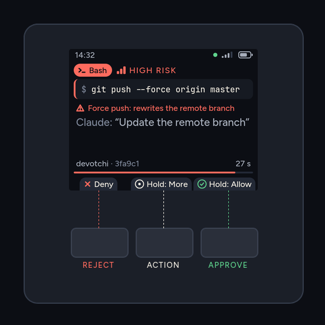

Devotchi phase 2: device UI design (v2, after review)
Every mockup is a 320x240 page (click an image to open it); the images are 2x renders. Read with
design-system.md, ux-flows.md and pet-animations.md.
Mockups define look, type, pages and button behaviour; they are not pixel-exact. 65 screens.
What changed after the two reviews
Pets own their identity: Devo's everyday moods are warm (idle is apricot, not grey); Ember is a jade dragon with its own body, face and palette.
Request cards put the exact command first and Claude's description second; a long command must be paged through before Allow works.
Every hold says what it does (Hold: Allow, Hold: Erase), and shows the outcome while held (Allowing…).
The session grant shows the rule the server will send, word for word; wide grants are amber or absent.
Questions use real-length text: three-line descriptions, a read page for long questions, time that grows as you press.
The clock is the resting face of the dimmed screen; the quick menu (ACTION hold on home) holds desk mode and the showcase.
A real request during the showcase is unmistakable and needs a hold.
Wi-Fi setup is two calm steps with a QR code at an exact 4 px per module.
The full list, with the points where the design disagrees with a reviewer, is in design-system.md under "Review decisions".
The device
The three buttons sit in a row under the screen: REJECT left, ACTION middle, APPROVE right, 14 mm apart. The on-screen tabs sit straight above them (x = 50, 160 and 270 px).

Pets
The signature pet Devo (the ghost from the PCB silkscreen), Mochi and Ember, in all moods and reactions, with the greyscale and small-size checks (pet-moods.html).
02-wifi-provisioningWi-Fi setup, step 1: nothing but the code and one instruction. 4 px per module (41 modules = 164 px incl. quiet zone), drawn with lv_qrcode at an exact scale.
03-wifi-connectingJoining Wi-Fi, with the failure reason. After three failures APPROVE offers Wi-Fi setup (a click: the old network is kept until a new one works).
06-pairingPairing code in two groups of three at display size, the exact command to type, expiry, and the server host on one mono line (default port hidden, long hosts cut in the middle).
10-home-idleHome, idle, no project label. Devo, the ghost, idles in a soft lilac with a smile and lit traces, not grey. No button tabs: the pet owns the screen.
18-toast-stickySticky banner (urgency 3): stays until any button is pressed (one centred tab = all three buttons). The pet steps up 4 px so the banner never covers its hem.
20-perm-lowLow risk. The exact command comes first, in the well; Claude's own description is second and labelled as Claude's. One page, so no Page tab.
22b-perm-long-commandA command longer than one page: the first page always shows its start, and Allow stays inactive until every page has been seen.23-perm-highHigh risk: the tab says what a hold does (Hold: Allow). The reason comes from the server's risk rule, not from Claude. Deny stays one click.
26-decision-menu-sessionThe only granting row. The server writes the rule it will send (here a prefix rule) and the device shows it word for word in mono; the row is amber and needs a hold.
28b-queue-nextWhen the queue moves on, the receipt is a strip at the top and the next card arms for 1 s (slate tabs, distinct haptic), so a double tap cannot answer it.
29-plan-approvalPlan approval (ExitPlanMode). Approve keeps manual edit approval and is inactive until both pages were seen. Time starts at the room hold and grows with every press.
33-question-readA question longer than two lines opens on a read page with the whole text (paged if it is longer still). There is nothing to choose yet, so APPROVE has no tab.
33b-question-scrollAfter the read page the question shrinks to one line and the options get the room: here rows 2-4 of 4, the focused row always complete.
35-question-multi-sendThe list ends in a Send row; with focus there APPROVE sends the ticked labels. With nothing ticked the row reads 'None of these'.
40-clock-dayClock face (day): what the screen shows in its resting (dimmed) stage whenever the agent is idle and nothing is pending. Any button or agent event returns home.
53-confirm-destructiveDestructive confirmation (factory reset, unpair): cancel is one click; the commit is 'Hold: Erase', and its glyph and fill turn coral because it destroys.
Pets
60-pet-pickerPet picker: a live, animated preview per pet; the one in use is tagged. Page dots only: ACTION is the one way to move.60b-pet-picker-mochiThe next built-in pet: Mochi, the soft square with an antenna. APPROVE switches.61-pet-picker-emberA pet with its own body, face and colours. APPROVE switches; the change shows everywhere at once.62-pet-picker-moreLast page of the picker: every finished pet ships in the firmware; four more slots are filled from the web dashboard.
About
70-aboutAbout, page 1: identity and network. Mono values, one fact per row.71-about-diagnosticsAbout, page 2: diagnostics, with the last error in coral.
Showcase (demo)
80-demo-menuShowcase menu: everything a friend should see, without an agent. Violet frame and one violet tag on every demo screen.81-demo-moodsMood preview: ACTION steps through the eleven moods, APPROVE pats, REJECT goes back.82-demo-reactionsReaction preview: pat, poke, dizzy, wake-up, attention.83-demo-permissionSample permission request: exactly the real high-risk card, with SAMPLE where the clock is; the answer goes nowhere.84-demo-questionSample question: exactly the real card (REJECT is Terminal, as on a real first question).85-demo-real-requestA real request during the showcase (and for 10 s after): cream REAL REQUEST bar, two pulses, 1.5 s arming, and Allow is a hold whatever the risk.
Power
90-low-batteryLow battery warning at 15 %: one toast, then a coral battery glyph in the status bar.91-going-to-sleepTen-second warning before deep sleep (the pet yawns). One centred tab: every button means 'stay awake'.92-battery-emptyBattery empty: full screen, no status bar, shown for 5 s before power-down.93-identifyIdentify (from the dashboard or `devotchi devices identify`): name full screen, LED and haptics.